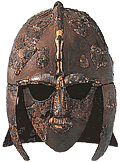
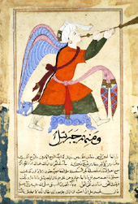

|
|
NewsSutton Hoo
The new visitor centre at Sutton Hoo features a reconstruction of the ship burial. Many artefacts have been loaned by the British Museum, including the famous helmet. 
Helmet from the ship burial at Sutton Hoo, Anglo-Saxon, early 7th century AD |
Beyond The British Museum
The Learning and Information Department is eager to take its programmes offsite, to schools and community groups in London and if possible to venues across the UK. Our schools programme 'Excavating in Egypt', which includes work online and a videoconferencing session with a museum archaeologist, has been run at ICT centres in Tower Hamlets and Newham. Handling sessions are run at local libraries and hospitals, such as Great Ormond Street and the Royal Free Hospital in Hampstead. The Arab World Programme has a touring Bedouin tent, which can be booked to visit schools and community centres and which is accompanied by a programme of events illustrating daily life in the Arab world. In collaboration with colleagues at the host venue, the Learning and Information Department also aims to support the Museum's programme of travelling exhibitions and regional displays, such as the recently-opened Sutton Hoo Visitor Centre in East Anglia and the forthcoming Money Gallery at Manchester Museum.
|
 The Wonders of Creation and the Oddities of Existence, a page from a manuscript. From Egypt/Syria. About AD 1375-1425
|
|||
|
home |
visit |
what's on |
join |
shop |
learning |
COMPASS |
world cultures |
sitemap |
contact us |
copyright
© The British Museum, 2002 |
|||||